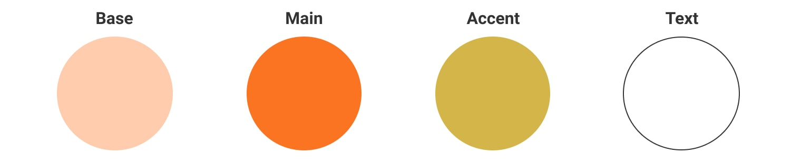
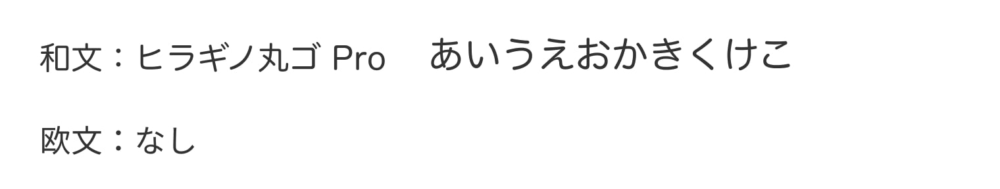

Point Company Webバナー
概要 Overview
1課題
ポイントサイトのバナー作成
2クライアント希望
（1）かんたんな感じ・お得な感じが伝わるようなデザイン
（2）ポイントサイトがわかるように「1ポイント＝1円」を強調
（3）配色の指定はなし
3着意点
誰でも簡単に始められる印象と、イラストを大きくしてターゲットを意識したデザインにしました。
- 制作期間：2日
- 担当箇所：デザイン
- 使用ツール：Photoshop
- URL：なし
ターゲット
- 20代〜30代主婦
- 手軽な内職的な副収入に興味がある人
- お小遣い稼ぎに興味がある人
デザイン
1デザインの目的
クリック数の増加を目的に、ターゲットの興味を促進する。
2工夫した点
主婦をイメージしたイラストを使用し、目に留まるように工夫しました。
配色

1ベース
ターゲットが主婦ということで落ち着いた淡い色を多く使用し、全体的に落ち着いた印象にしました。
2メイン
暖色系を取り入れ温もり、安心といった効果を図りました。
3アクセント
金に近い色にすることで、お金を連想させ、クリックへの誘導を狙いました。
フォント

視認性の高さと、イラストやデザイン全体の雰囲気に合う、丸みの書体にしました。